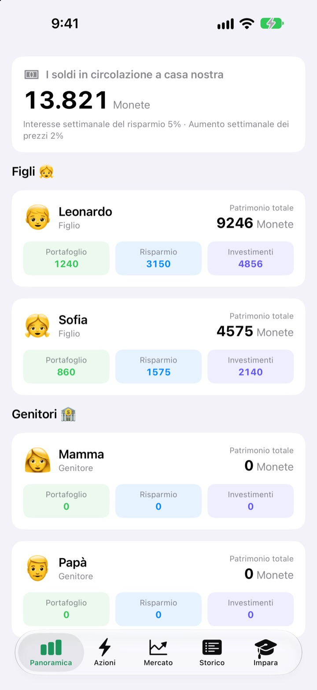
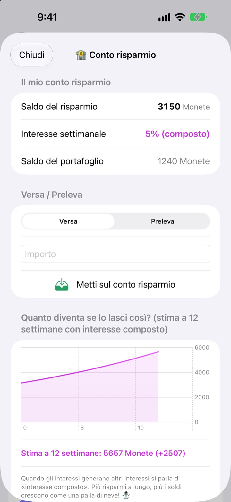
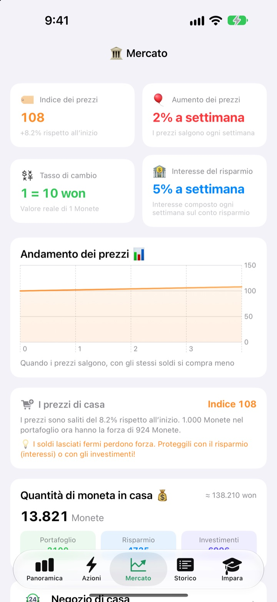
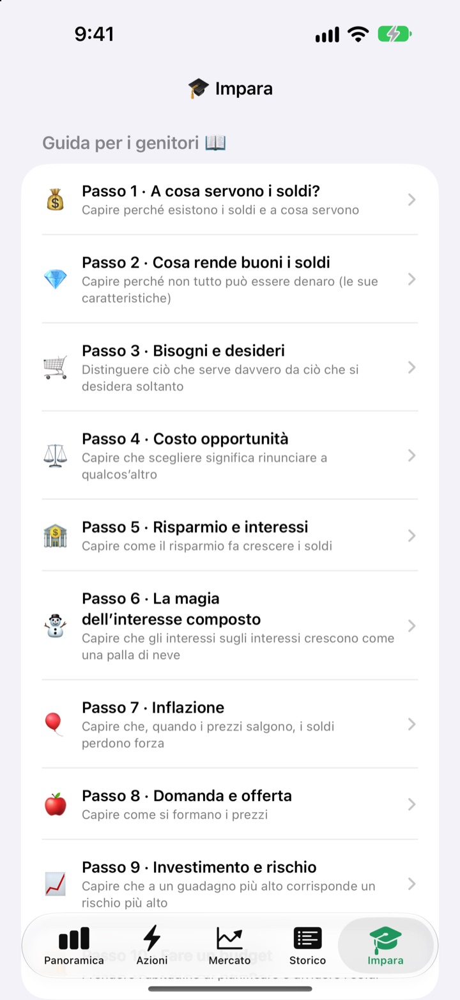

La paghetta
diventa una lezione
Tu sei la banca centrale di famiglia, i tuoi figli sono i clienti. Ricevono la paghetta nella vostra moneta, si comprano la merenda, vedono arrivare gli interessi sul risparmio e vivono i su e giù di un fondo di prova.
Tutte le funzioni sono gratuite. Non passa mai di mano denaro vero.

Dove terresti 1.000 monete?
Le stesse 1.000 monete stanno nel portafoglio, su un conto di risparmio e in tre fondi. Vai avanti una settimana alla volta e guarda cosa succede a ciascuna. Le regole sono le stesse dell’app.
«Mettilo da parte e crescerà»: un bambino ci crede davvero?
Interessi, interesse composto, inflazione: più li spieghi, più sembrano lontani. Con SukSuk Paghetta i bambini guadagnano, spendono e aspettano da soli. Quando scoprono gli interessi sul risparmio della settimana scorsa, la paghetta successiva finisce dritta nel conto di risparmio.
La pazienza si vede
I soldi nel conto di risparmio maturano interesse composto ogni settimana. Il tasso lo decidi tu, e un grafico mostra quanto diventeranno tra 12 settimane se restano lì.
Qualche giorno senza aprire l’app? Alla prossima apertura arrivano tutte insieme le settimane arretrate.

Vedere i prezzi mangiarsi il portafoglio
La scheda Mercato riunisce in una sola schermata l’indice dei prezzi di famiglia, l’inflazione, il tasso di interesse, la quantità di moneta e i prezzi dei fondi. Man mano che i prezzi salgono, mostra quanto meno comprano le 1.000 monete nel portafoglio.
I bambini vedono con numeri chiari che i soldi fermi si rimpiccioliscono, mentre quelli risparmiati o investiti tengono.

Dieci chiacchierate da fare insieme
La guida per i genitori ti accompagna in dieci passi: perché serve il denaro, bisogni e desideri, costo opportunità, risparmio e interessi, interesse composto, inflazione, investimenti e rischio, fino a preparare un budget.
Un calcolatore di interesse composto e un calcolatore per l’esperimento sui prezzi vi permettono di cambiare i numeri e vedere cosa succede.

Tre passi per iniziare
- 1
Dai un nome alla moneta
Fagioli, Stelle, Monete: come preferisce chiamarla la tua famiglia.
- 2
Scegli un PIN per i genitori
Quattro cifre. Solo chi lo conosce può dare la paghetta o cambiare le impostazioni della banca.
- 3
Aggiungi la famiglia
Aggiungi figli e genitori, dai la prima paghetta e si parte.
Cosa trovi e dove
- Panoramica
- Portafoglio, risparmio e investimenti di tutti a colpo d’occhio
- Azioni
- Dai o togli la paghetta, Codice a barre, Aggiungi articolo, Invita un figlio, Modalità telefono del figlio, Impostazioni della banca (serve il PIN dei genitori)
- Mercato
- Indice dei prezzi, inflazione, tasso di cambio, interesse del risparmio, quantità di moneta, prezzi dei fondi
- Storico
- Ogni movimento di denaro per data, per membro o per tipo
- Impara
- Guida per i genitori in dieci passi, calcolatore di interesse composto, calcolatore per l’esperimento sui prezzi
- 🐢 Fondo Tartaruga Sicuro
- Piccole oscillazioni ogni giorno, sale piano e con costanza
- 🐰 Azioni Coniglio Crescita
- Sale e scende, ma cresce
- 🚀 Azioni Razzo Avventura
- Può volare alto o precipitare
Si parte con il 5% di interesse settimanale sul risparmio e il 2% di inflazione settimanale. Puoi cambiarli entrambi nella Modalità genitore, in Impostazioni della banca. Con l’inflazione allo 0% i prezzi restano fermi.
Tutte le funzioni sono gratuite
Gratis
- La vostra moneta di famiglia e una Modalità genitore protetta da PIN
- Dare e togliere la paghetta, il Negozio di casa e i pagamenti con codice a barre
- Un conto di risparmio con interesse composto settimanale
- Tre fondi di prova con grafici dei rendimenti
- La scheda Mercato e lo storico dei movimenti per data
- La guida per i genitori in dieci passi e due calcolatori
- Modalità telefono del figlio e sincronizzazione con iCloud
Sostieni lo sviluppatore
- Lascia una mancia dell’importo che vuoi da Impostazioni della banca, nella Modalità genitore
- La mancia non sblocca nulla. L’app funziona allo stesso modo
Niente pubblicità, niente abbonamenti. Il pulsante della mancia è solo dentro la Modalità genitore, così i tuoi figli non vedono mai un pulsante di acquisto.
Domande frequenti
Si usano soldi veri?
No. La moneta e tutte le operazioni nell’app sono finte e servono solo per imparare. Non c’è alcun collegamento con conti bancari, carte o contanti reali.
Come vediamo gli stessi conti sul telefono di mio figlio?
I dispositivi collegati allo stesso account iCloud sincronizzano automaticamente i conti di famiglia. Controlla che iCloud sia attivo in Impostazioni > Account Apple > iCloud. Nella scheda Azioni, da Invita un figlio, puoi creare un invito con codice QR da inquadrare con la fotocamera. Senza iCloud i dati restano solo su quel dispositivo.
Cos’è la Modalità telefono del figlio?
Trasforma il telefono di tuo figlio in una schermata tutta sua. Vede solo il proprio portafoglio, gli investimenti, lo storico e le lezioni, e per uscire serve il PIN dei genitori.
Ho dimenticato il PIN dei genitori.
Il PIN è salvato solo sul dispositivo, quindi nemmeno lo sviluppatore può recuperarlo. Se elimini e reinstalli l’app puoi rifare la configurazione, ma verranno cancellati anche i dati esistenti.
Come funzionano gli interessi sul risparmio?
Ogni settimana l’interesse composto viene aggiunto in automatico al saldo del risparmio. Il tasso lo scegli nella Modalità genitore, e le settimane trascorse vengono saldate alla successiva apertura dell’app.
I prezzi dei fondi seguono il mercato reale?
No. Sono dati di prova che cambiano una volta al giorno dentro l’app. Più il fondo è rischioso, più oscilla. Non sono prodotti finanziari reali.
Perché i prezzi salgono?
Per far toccare con mano l’inflazione, l’indice dei prezzi di famiglia sale un po’ ogni settimana. Puoi cambiarne il ritmo, o metterlo allo 0% per fermarlo, nella Modalità genitore, in Impostazioni della banca. Se alzi un po’ anche i prezzi di merendine e giocattoli nel Negozio di casa, la lezione resta impressa.
Come cancello tutto?
Eliminando l’app si cancellano i dati salvati sul dispositivo. Per i dati sincronizzati su iCloud, vai in Impostazioni > Account Apple > iCloud > Gestisci spazio ed elimina i dati dell’app.
Le informazioni della mia famiglia vengono inviate da qualche parte?
No. Non serve registrarsi e tutti i dati restano sul tuo dispositivo e nel tuo account iCloud. Lo sviluppatore riceve solo i feedback che invii tu dalla Modalità genitore, oltre a statistiche d’uso anonime e rapporti sugli arresti anomali.
Su quali dispositivi funziona?
Su iPhone con iOS 17.0 o versioni successive.
Domande, problemi o idee? Scrivi a leeo@kakao.com. Indicando il modello del dispositivo e la versione di iOS potremo aiutarti più in fretta.